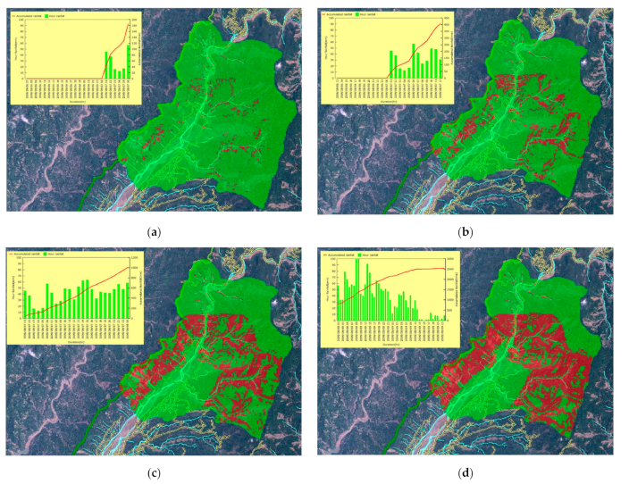

Task 2: Review of Key Papers#
Student: Oscar Sanchez#
Introduction#
A landslode is defined as the displacement of a mass of soil, vegetation, rock, debris, or a mixture of these materials that slides along a slope [1]. When these events occur near inhabited areas, they become one of the most frequent and devastating natural hazards, causing thousands of casualties and significant economic losses each year [2]. According to Gómez (2023)[3], 61% of mass movements that have resulted in fatalities are primarily triggered by rainfall. Thus, precipitation becomes one of the most common and essential factors in understanding the occurrence of this phenomenon [4,5,6].
In Colombia, a specific and detailed methodology for implementing a daily-scale model to provide an overview of critical areas prone to landslides in a specific region has not yet been established. Although studies on the subject have been conducted in the Aburrá Valley and other parts of the country, the relationship between rainfall conditions and landslides remains insufficiently explored [7].
This gap motivates the present research, which aims to analyze and understand the variables influencing the occurrence of landslides, particularly their spatial and temporal variations, with a focus on rainfall. This study seeks to utilize machine learning or AI models to establish a predictive model for landslide probability based on prior days’ rainfall. This understanding enables the development of models or methodologies that, when integrated into an early warning system, can identify critical areas and serve as essential tools for decision-making. As a first step, a comprehensive literature review was conducted on research focused on establishing spatio-temporal analyses of landslides occurrence through various machine learning models.
Paper 1: Adopting the margin of stability for space–time landslide prediction – A data-driven approach for generating spatial dynamic thresholds#
Authors: Stefan Steger et al.
Year: 2024
Key Highlights: The main aim of this research is to generate a dynamic spatial landslide initiation model that operates at a daily scale and explicitly counteracts potential errors in the available landslide data.
Study area: Northern Italy, in the province of Bolzano – South Tyrol, covers an area of 7.400 km². The region’s elevation ranges from 200 up to 3.900 m a.s.l. Mean annual precipitation ranging from about 600 mm in the lower-lying west to more than 1.500 mm in the higher-lying parts in the north and northeast.
Data used:
Landslide inventory: 555 records of rain-induced landslides with their occurrence dates between 2000 and 2020. They exhibit a spatial bias, as they systematically reflect damage-causing slope instabilities while underrepresenting landslides in remote and high-altitude locations.
Variables representing landslide predisposition: Morphometric variables derived from a 30 m DEM include: slope angle, slope aspect, normalized relative height index, convergence index, forest cover map, lithology, and mean annual precipitation. The categorical variable LOC_ID identifies each unique location where landslides have been recorded.
Variables representing dynamic landslide controls: Gridded daily precipitation data derived from meteorological stations with a cell size of 250 m was used: Triggering precipitation (T), which represents the cumulative amount of precipitation that fell shortly before and on the observation day, and preparatory precipitation (P), which describes the antecedent cumulative precipitation for a specific time period before T. T: day 0 to day 5 and P day 1 to day 30. Seasonal effects that cannot be explained by the two precipitation variables were assessed using a day-of-the-year variable (DOY). An additional variable YEAR was used as a random effect to isolate data variability related to a potential bias across years in landslide recording.
Metodology:
1. Masking and data sampling:
A characteristic area was selected where the majority of landslide records are present, and areas without records and flat regions were excluded.
Random absence points for landslides were chosen at a minimum distance of 150 meters, and multiple random days were selected for each absence location, ensuring a balanced representation across different years and months. In total, there are 555 landslide presences compared to 1,808 absences.
A minimum temporal gap of 30 days between observations of the same location was imposed, and all observations, whether of the presence or absence of landslides, with precipitation levels < 1.1 mm on the observation day or the day before were excluded from the analysis.
2. Generalized Additive Mixed model and variable selection:
What is GAMM? A GAMM combines features of Mixed Models and Generalized Additive Models (GAM), enabling the analysis of complex data by handling:
Fixed and Random Effects: Captures both systematic and random variations in the data.
Non-Linear Relationships: Models complex interactions between independent and dependent variables using smooth functions.
Nested or Grouped Data: Ideal for hierarchical or spatial-temporal data structures.
General Formula of a GAMM
The general formula of a GAMM is:
\[ g(\mathbb{E}[Y_i]) = \beta_0 + f_1(X_{1i}) + f_2(X_{2i}, X_{3i}) + \dots + Z_i b + \epsilon_i \]\( Y_i \): Dependent (response) variable for observation \( i \).
\( g \): Link function connecting the mean of \( Y \) to the model’s linear predictions.
\( \mathbb{E}[Y_i] \): Expected value of \( Y_i \).
\( \beta_0 \): Model intercept.
\( f_1(X_{1i}), f_2(X_{2i}, X_{3i}), \dots \): Smooth functions capturing non-linear relationships between predictors \( X \) and the response \( Y \).
\( Z_i b \): Random effects term, where \( Z_i \) is the design matrix for random effects and \( b \) are the random coefficients.
\( \epsilon_i \): Random error term.
Smooth Functions: Allow flexible modeling of non-linear patterns without specifying a particular functional form.
Random Effects: Account for variability across different groups or clusters in the data, such as locations or time periods.
Link Function: Connects the linear predictor to the mean of the response variable, suitable for different types of data (e.g., logistic for binary outcomes).
Variable Selection in GAMM Through Two Steps
First Step: Double Penalty Approach: A double penalty approach is employed consisting of two types of penalties:
Wiggliness Penalty:
Function: Controls how “wiggly” or flexible the smooth function can be that models the relationship between an independent variable and the dependent variable.
Shrinkage Penalty:
Function: Reduces the influence of less important variables in the model by “shrinking” their coefficients towards zero.
Benefits:
Selects relevant variables.
Prevents overfitting.
Both penalties are applied iteratively to construct a balanced and efficient model.
Application of Penalties:
Wiggliness Penalty: Applied to smooth functions to control their flexibility.
Shrinkage Penalty: Applied to the coefficients of variables to diminish the impact of less important ones.
Second Step: Validation of the T-P Temporal Window
Cross-Validation: The dataset is divided into parts to repeatedly test the model. Ensures the model performs well across different scenarios.
Grid-Search: Tests different combinations of T and P to identify the most effective pair.
Iteration: The steps are repeated until the selected variables stabilize and no longer change in subsequent iterations.
3. Evaluation and visualization of modelled relationships:
Inter-variable: The importance of different variables in the model is analyzed using Deviance Explained, a measure that indicates how well the model fits the data. This is done by comparing the full model, which includes all variables, with reduced models that exclude one variable at a time. If removing a variable significantly decreases the Deviance Explained, that variable is deemed highly important for the model.
Intra-variable: Contour Plots illustrate how the probability of landslides changes when two variables are adjusted simultaneously. These plots help in understanding how different combinations of variables influence the occurrence of landslides.
4. Calculation of model performance threshold-building and dynamic maps: The models were evaluated using the calculation of the AUROC curve and cross-validation. This approach was utilized to select the pair of antecedent rainfall days that best fit the data and to establish different rainfall thresholds. Cross-validation was implemented in three forms:
Random Cross-Validation: The data were randomly divided into multiple subsets.Created 50 random partitions, each consisting of 5 subsets with 10 repetitions each.
Temporal Cross-Validation: The data were split based on time. Conducted both annual and monthly partitions, systematically leaving out single time units during model training and testing the model’s performance on these excluded periods.
Spatial Cross-Validation: The data were divided according to their geographical locations. Used the k-means clustering method with ùëò=10 to create spatial clusters. Subsequently, the study area was divided into four main geographical zones (North, West, East, South), and cross-validation was applied to each of these zones.
Key results:
Variable importance and modelled relationships
Short-term precipitation (T) was found to be the most important variable in explaining landslide occurrence, followed by slope angle and forest cover.
Dynamic variables (precipitation) were generally more important than static predisposition factors in the model.
Landslide occurrence probability was found to be higher in typically drier areas for the same precipitation event, supporting the concept of landscape equilibrium.
During summer, more rainfall was required to trigger landslides compared to winter/spring due to higher evapotranspiration and vegetation effects.
Model Performance:
AUROC Score: The model had a high AUROC of 0.91, indicating strong predictive performance.
Thresholds: The study derived three thresholds—TPR95 (95% true positive rate), OPT (balanced between sensitivity and specificity), and TPR25 (25% true positive rate). TPR95 had a high false alarm rate (44%), while TPR25 was associated with a very low false alarm rate (0.4%).
Cross-validation: The model showed consistent performance across random, temporal, and spatial cross-validation, with some exceptions for certain years with lower AUROCs due to the limited effectiveness of the precipitation variables.
Spatial Dynamic Thresholds:
The model generated dynamic spatial thresholds that varied based on short-term and antecedent precipitation. Threshold exceedance was found to depend on local predisposition and precipitation conditions, demonstrating its use for hindcasting and forecasting landslide scenarios.

Machine Learning tool used:
Generalized Additive Mixed Model (GAMM): A statistical model capable of handling both non-linear relationships and hierarchical data structures, providing flexibility and interpretability in the analysis.
Strenghts:
Model Interpretability: Emphasis on model interpretability allowed understanding the influence of different landslide controls.
Dynamic Prediction Capability: The approach effectively integrates spatial and temporal dynamics to generate realistic landslide prediction maps.
Effective Data Bias Handling: The use of GAMM and careful sampling design addressed spatial and temporal biases in the input landslide data.
Limitations:
Dependence on Data Quality: The quality of the landslide inventory significantly influences model performance, with data biases requiring careful handling.
Limited Seasonal Prediction Ability: The model’s ability to capture winter/spring effects such as snowmelt is limited, suggesting a need for incorporating dynamic snow-related variables.
Model Transferability: While spatial and temporal cross-validation indicated good performance, certain years exhibited lower predictive accuracy, highlighting challenges in generalizability across different temporal conditions.
{kind=link}
{kind=link}
Paper 2: Developing Real-Time Nowcasting System for Regional Landslide Hazard Assessment under Extreme Rainfall Events#
Authors: Yuan-Chang Deng et al.
Year: 2021
Study area: Southern Taiwan, Xiaolin is located in the Jiasian District, Kaohsiung City.
Key Highlights: The aims of this research was to integrate a real-time rainfall data retrieving system, a landslide-susceptibility analysis program (TRISHAL), and a real-time landslide-potential display system to implement a real-time nowcasting system for regional landslides.
Data used:
Real-Time Rainfall Data Retrieving System: The research utilized real-time hourly rainfall data retrieved from the Central Weather Bureau (CWB) website.
Hydrogeological parameters:, including soil cohesion, internal friction angle, saturated hydraulic conductivity, and hydraulic diffusivity, were calibrated using a Real-coded Genetic Algorithm (RGA) integrated with the TRIGRS model.
Metodology:
Integration of a Real-Time Rainfall Data Retrieval System
Real-Time Landslide Susceptibility Analysis (TRISHAL): An improved version of the TRIGRS (Transient Rainfall Infiltration and Grid-based Regional Slope-Stability) model was used as the core of the analysis.
Inverse Optimization Analysis to Calibrate Regional Parameters: A Real-coded Genetic Algorithm (RGA) was integrated with the TRIGRS model to calibrate regional hydrogeological parameters (such as cohesion, internal friction angle, hydraulic conductivity, and hydraulic diffusivity). A fitness function that includes penalties and considers evaluation indices based on a confusion matrix was used to optimize the calibration.
Model Performance Evaluation: The success rate in landslide prediction, the false alarm rate, and the area under the curve (AUC) were used to measure the quality of the predictions.
Real-Time Landslide Potential Visualization System: A system was implemented in ArcGIS that displays real-time landslide susceptibility maps, utilizing ArcGIS object functions and the Windows API library.
Key results:

Established an integrated system combining real-time rainfall data retrieval, a landslide susceptibility analysis program (TRISHAL), and a landslide potential visualization system.
Tested the system using real data from the 2009 Typhoon Morakot-induced landslides in Xiaolin, Taiwan. Safety Factor (FS) maps highlighted unstable areas (FS < 1) and stable areas (FS ≥ 1), enabling visualization of landslide susceptibility evolution during the event.
Employed inverse optimization analysis using a Real-coded Genetic Algorithm (RGA) integrated with the TRIGRS model to calibrate parameters such as soil cohesion, internal friction angle, saturated hydraulic conductivity, and hydraulic diffusivity.
Machine Learning tool used:
Strenghts:
Successfully combined real-time rainfall data retrieval, physical model-based susceptibility mapping, and integration into a single automated system.
Achieved improved calculation speeds when processing large volumes of data.
Utilized genetic algorithms to effectively calibrate hydrogeological parameters.
Limitations:
The success rate in prediction and the AUC index indicate moderate precision, suggesting the model requires refinement.
Parameter calibration was based on a single prior event, which is insufficient to ensure the model’s robustness.
The model does not account for rising groundwater levels or lateral flow conditions, factors that can significantly influence landslide occurrences.
Evaluation was limited to a single study area, restricting the generalizability of the results to other regions.
Paper 3: Towards landslide space-time forecasting through machine learning: the influence of rainfall parameters and model setting#
Authors: Nicola Nocentini et al.
Year: 2023
Key Highlights: The main objective of this study is to develop and evaluate a dynamic machine learning approach using Random Forest to predict landslides in both space and time by combining static susceptibility indicators with dynamic rainfall variables, and to determine which rainfall parameters and model settings most effectively identify the timing and location of landslides.
Study area: The Metropolitan City of Florence, central Italy. Area of 3.514 km2. Mean annual precipitation varies between 600 mm/year in the south areas and in the Florence Plain and 1,200 mm/year in the mountainous areas of the north.
Data used:
Landslide inventory: 410 landslides were extracted, mainly shallow landslides and small debris or mudflows, for the period from 2010 to 2019; with an estimated spatial and temporal resolution of 1 km and 1 days respectively.
Cumulative rainfall (CR_x [mm]): was calculated over various time intervals ranging from 1 to 30 days (where x represents the number of days). The cumulative rainfall data were obtained using weather radar measurements.
The month of observation of the events (landslide or non-landslide events) (Month [-]) inserted as a categorical type (from 1 to 12).
Landslide Susceptibility Index (LSI [-]): A susceptibility map with a resolution of 100 m² was created using the Random Forest algorithm, incorporating the following variables: elevation, slope, aspect, total curvature, profile curvature, planar curvature, lithology, and land use. Through an Out-of-Bag (OOB) methodology, the most influential variables were identified as elevation, lithology, slope, and land use.
Random variable (Random [-]): A random variable with values between 0 and 1 was included in the analysis. This random variable serves as a control or benchmark to evaluate the predictive power of the actual variables used in the model.
Metodology:
Data Pre-processing and Sampling: study compiled a dataset of landslide occurrences and created six different methods to select non-landslide events, varying in spatial and temporal relation to the landslide events (same/different locations and days). Balanced and Unbalanced Datasets: To assess the model under different conditions, both balanced (1:1 ratio) and unbalanced datasets (up to 1:10 ratio of landslide to non-landslide events) were prepared, totaling six testing scenarios.
Random Forest Model Configuration: Four Model Configurations Tested: The Random Forest algorithm was configured in four different ways, varying the number of input variables (all variables vs. selected important ones) and the balance of datasets (balanced vs. highly unbalanced). Variable Selection: The models included static variables like the Landslide Susceptibility Index (LSI) and dynamic variables such as cumulative rainfall over various periods (from 1 to 30 days) and the month of occurrence to capture seasonality effects.
Model Execution and Evaluation: Each model configuration was executed seven times with different random splits of training and testing data to ensure the reliability of results, totaling 168 model runs. The Random Forest models were built using 2,000 trees to achieve stable Out-of-Bag Error (OOBE) rates, enhancing the consistency of variable importance measures. The models evaluated the influence of each variable on landslide occurrence using metrics like OOBE and variable importance scores, aiming to identify the most significant rainfall parameters and validate the applicability of the dynamic modeling approach for spatiotemporal landslide prediction.
Key results:
Short-Term Rainfall as a Critical Predictor: The Random Forest model identified short-term cumulative rainfall (1-3 days) as the most important variable in predicting landslides when non-landslide events were selected on different days. This confirms that recent intense rainfall significantly influences landslide triggering.
Landslide Susceptibility Index (LSI) Importance in Spatial Variation: When non-landslide events were chosen at different locations but on the same days as landslides, the Landslide Susceptibility Index emerged as the most important variable. This highlights the significance of spatial factors in landslide occurrence.
Model Alignment with Physical Mechanisms: Partial Dependence Plots demonstrated that the model’s predictions are consistent with known physical processes. Landslide probability increases with higher short-term rainfall amounts, and certain months (February, March, November) showed higher risks, reflecting seasonal patterns.
Robustness with Unbalanced Datasets: Even when using highly unbalanced datasets (with many more non-landslide events), the model consistently identified key variables influencing landslide occurrences. However, the peak importance of rainfall variables shifted to higher rainfall values, indicating the model adapts to data distribution while maintaining relevant predictors.
Machine Learning tool used:
What is Random Forest?: is an ensemble learning method used for classification and regression tasks. It builds multiple decision trees during training and outputs the class that is the mode of the classes (classification) or mean prediction (regression) of the individual trees. Can process both numerical and categorical variables.
Bootstrap Aggregating (Bagging): Bagging is a technique where multiple subsets of the training data are created by random sampling with replacement. Each subset is used to build a separate decision tree.
Out-of-Bag (OOB) Samples: The observations not included in a particular training subset are called OOB samples. OOB samples are used to estimate prediction errors and variable importance without the need for a separate validation set.
Strenghts:
Consistency with Physical Processes: The model accurately reflects the known physical mechanisms of shallow landslides, highlighting the importance of short-term intense rainfall and seasonal factors in triggering events.
Effective Variable Identification: The methodology successfully identified key predictors—short-term rainfall, month (seasonality), and Landslide Susceptibility Index (LSI)—demonstrating their significant influence on landslide occurrences.
Promising for Spatiotemporal Prediction: The proposed dynamic approach using Random Forest shows encouraging results for both spatial and temporal landslide prediction, offering a solid foundation for future forecasting applications.
Limitations:
Dependence on Data Quality: The model’s accuracy is affected by the completeness of the landslide inventory; incomplete data can lead to misclassifications and increased uncertainty in predictions.
Sensitivity to Data Imbalance: The degree of imbalance between landslide and non-landslide events influences model calibration, requiring careful evaluation to prevent skewed or unrealistic results.
Limited Generalizability: The results are highly site-specific; applying the methodology to other regions or different types of landslides necessitates recalibration, limiting its immediate applicability elsewhere.
Paper 4: Regional-scale spatiotemporal landslide probability assessment through machine learning and potential applications for operational warning systems: a case study in Kvam (Norway)#
Authors: Nicola Nocentini et al.
Year: 2024
Key Highlights: This study aims to introduce an innovative application of the Random Forest algorithm for spatiotemporal prediction of landslides in the Kvam area (Norway). It combines both static (lithology, morphology) and dynamic factors (cumulative rainfall, snowmelt, and seasonal variability) to produce landslide hazard maps that can potentially be integrated into early warning systems.
Study area: Kvam, Norway, located in Gudbrandsdalen Valley (2,800 km²). The region experienced significant landslide events in 2011 and 2013, both triggered by extreme rainfall.
Data used:
Landslide inventory: Compiled by NGI and extended with the Norwegian National Landslide Inventory (NNLI), totaling 373 landslides from 2010 to 2022.
Dynamic factors
Cumulative rainfall (CR_x [mm]): Calculated over various time intervals (1-30 days) to account for short and long-duration events.
*Cumulative Snowmelt (CS_x): Similar intervals as rainfall; focuses on snow melting impact on soil.
Month: Used to capture seasonal variability as a categorical variable from January to December.
Static Factor
Landslide Susceptibility Index (LSI): A susceptibility map based on factors like slope, aspect, lithology, and land cover.
Metodology:
Dynamic RF Model: The Random Forest model was trained with both balanced (1:1) and imbalanced datasets (up to 1:100 ratio). The dataset included spatial and temporal explicit landslide and non-landslide events, combining both static and dynamic variables.
Model Validation: The model’s performance was assessed using OOBE and PDPs to analyze the significance of each variable. The “Double Threshold Validation Tool (DTVT)” was used to validate the generated landslide hazard maps at a regional scale.
Key results:
Daily Cumulative Rainfall as Main Trigger: Short-duration, high-intensity rainfall is the most influential factor for landslides, aligning with known physical processes.
Landslide Susceptibility Index (LSI) Validates Spatial Accuracy: LSI was identified as the most critical static factor, correlating with locations already predisposed to instability.
Importance of Seasonal Effects: The “Month” variable highlights May and June as the most critical months due to snowmelt and increased rainfall, affecting soil saturation.
Database Imbalance Increases Model Reliability: Increasing the number of non-landslide events improved the representativeness of the model but needs careful calibration to avoid misinterpretations.
Machine Learning tool used:
Random Forest Algorithm: Used for both the static LSI map and the dynamic spatiotemporal analysis, capable of handling complex data without assumptions about statistical distribution.
Partial Dependence Plots (PDPs) and Out-of-Bag Error (OOBE): These metrics were used to validate variable importance and ensure model outcomes were physically consistent.
Strenghts:
Comprehensive Spatiotemporal Analysis: Successfully integrates dynamic and static factors for predicting landslides over both space and time.
High Predictive Power for Short-term Rainfall: The model effectively identifies the role of short-term intense rainfall in landslide triggering.
Potential for Early Warning Systems: The methodology provides a solid framework for integration into operational early warning systems, especially with high predictive power demonstrated during major events.
Limitations:
Dependence on Data Completeness: The quality and completeness of the landslide inventory significantly affect model reliability.
Sensitivity to Database Imbalance: Over-imbalance can lead to unrealistic predictions, reducing model effectiveness.
Site-specific Results:: The model’s applicability is limited to the study area, requiring recalibration for other regions with different landslide typologies.
Paper 5: An ensemble neural network approach for space-time landslide predictive modelling#
Authors: Jana Lim et al.
Year: 2024
Key Highlights: This study introduces an ensemble neural network model integrating Gated Recurrent Units (GRU) to use rainfall as a continuous time series for predicting landslides. The methodology focuses on combining terrain characteristics with dynamic rainfall data to enhance accuracy in space-time landslide prediction, using a proof-of-concept in Vietnam.
Study area: Vietnam, particularly the northern provinces, where the topography is complex (elevation from sea level to 3098 m). The region is prone to rainfall-induced landslides, especially during the monsoon season (May to October).
Data used:
Landslide inventory: Event-based inventory obtained from the Lower Mekong region (Cambodia, Myanmar, Laos, Vietnam) using semi-automatic NDVI change detection from PlanetScope and RapidEye images between 2009 and 2020.
Rainfall Data: Satellite-derived rainfall data from Climate Hazards group Infrared Precipitation with Stations (CHIRPS) at a daily resolution. Rainfall was represented by several metrics such as sum, maximum, cumulative sum, and sum difference over 7, 14, 21, and 30-day windows.
*Static Terrain Data: Factors included slope, elevation, lithology, land cover, distance to faults, slope curvature, among others, derived from open-source datasets such as MERIT DEM and global land cover data.
Metodology:
Data Partitioning and Predictors: The study area was partitioned into slope units (SUs) for independent modelling of landslide occurrences. Predictors were classified as static (terrain characteristics) and dynamic (rainfall metrics). GRUs were used to handle rainfall time series data, and a second neural network processed terrain data.
Model Setup: A Gated Recurrent Unit (GRU) was employed for the temporal rainfall data, while a Fully Connected Neural Network (FCNN) was used for the terrain data. The outputs from these two components were integrated to form a final prediction using another FCNN. Hyperparameter optimization was performed using the Hyperband and Bayesian Optimization algorithms.
Benchmarking: A model benchmark was conducted by comparing the results of using the full time series of rainfall against a scalar representation (cumulative value). The 14-day antecedent rainfall window was found to yield the best results in terms of prediction accuracy.
Key results:
Superior Performance of Time Series Model: The use of rainfall as a continuous time series improved prediction accuracy (AUC ~0.78) compared to using a scalar representation (~0.69), highlighting the benefit of preserving temporal rainfall information for landslide prediction.
Optimal Time Window for Rainfall: The 14-day antecedent rainfall window was found to be optimal for predicting landslides, achieving better accuracy and reducing both False Positives (FP) and False Negatives (FN) compared to longer windows.
Classification Accuracy and Confusion Analysis: The model demonstrated good consistency across multiple trials, with accuracy ranging between 69-71%. Spatial confusion maps indicated a higher proportion of correctly predicted landslide occurrences (True Positives) with the 14-day model, making it preferable for a more conservative approach in Early Warning Systems.
Challenges with Temporal Uncertainty: Temporal uncertainty in landslide records, particularly in inventories with 6-day uncertainties, negatively affected model accuracy, emphasizing the importance of accurate time attribution for landslide occurrences.
Machine Learning tool used:
Gated Recurrent Units (GRU): GRUs were used to handle temporal aspects of the data, providing flexibility in handling varying lengths of rainfall time series.
Fully Connected Neural Network (FCNN): FCNNs were used for processing static terrain data and integrating it with the temporal output.
Hyperparameter Optimization: Hyperband and Bayesian Optimization were utilized for tuning the model parameters.
Strenghts:
Enhanced Model Accuracy through Time Series Representation By using rainfall as a continuous time series, the model provided a more nuanced understanding of rainfall’s role in landslide triggering, outperforming traditional cumulative measures.
High Predictive Power for Short-term Rainfall: The model effectively identifies the role of short-term intense rainfall in landslide triggering.
Open-Source Data and Applicability in Data-Scarce Contexts: The model leveraged open-source data, which can be replicated in other data-poor regions, enhancing the utility of the methodology.
Integrated Space-Time Modelling: The combined use of terrain characteristics and dynamic rainfall metrics allowed for a more comprehensive model, capturing both spatial and temporal dimensions of landslide occurrence.
Limitations:
Dependence on Rainfall Data Quality: The accuracy of predictions was affected by the quality of rainfall data, which was derived from satellite sources (CHIRPS) that may lack spatial and temporal precision compared to in-situ measurements.
High Computational Cost: The model required considerable computational resources, making it potentially challenging to scale up for larger areas or finer spatial/temporal resolutions.
Limited Generalizability: The model was trained on site-specific data, and transferring it to different regions with varied climatic or topographic conditions would require substantial retraining or recalibration.
Paper 6: From spatio-temporal landslide susceptibility to landslide risk forecast#
Paper 7: Speech-recognition in landslide predictive modelling: A case for a next generation early warning system#
Paper 8: Space-time modeling of landslide size by combining static, dynamic, and unobserved spatiotemporal factors#
Paper 9: Landslide hazard spatiotemporal prediction based on data-driven models:Estimating where, when and how large landslide may be#
References#
[1] Cruden, D. M., & Varnes, D. J. (1996). Landslide types and processes. Special Report - National Research Council, Transportation Research Board, 247(February), 36–75.
[2] Dilley, M., Chen, R. S., Deichmann, U., Lerner-Lam, A. L., & Arnold, M. (2005). Natural Disasyer Hotspots. A Global Risk Analysis. In Disaster Risk Management Series (Issue 5). https://doi.org/10.1080/01944360902967228
[3] Gómez, D., García, E. F., & Aristizábal, E. (2023). Spatial and temporal landslide distributions using global and open landslide databases. In Natural Hazards (Vol. 117, Issue 1). Springer Netherlands. https://doi.org/10.1007/s11069-023-05848-8
[4] Guzzetti, F. (2000). Landslide fatalities and the evaluation of landslide risk in Italy. ELSEVIER, 58, 89–107.
[5] Kirschbaum, D. B., Adler, R., Hong, Y., Hill, S., & Lerner-Lam, A. (2010). A Global landslide catalog for hazard applications: method, results, and limitations. Springer, 561–575. https://doi.org/10.1007/s11069-009-9401-4
[6] Petley, D. (2012). Global patterns of loss of life from landslides. Geology, 40(10), 927–930. https://doi.org/10.1130/G33217.1
[7] Hidalgo, C. A., & Vega, J. A. (2014). Estimación de la amenaza por deslizamientos detonados por sismos y lluvia (Valle de Aburrá-Colombia). Revista EIA, 11(22), 103–117.